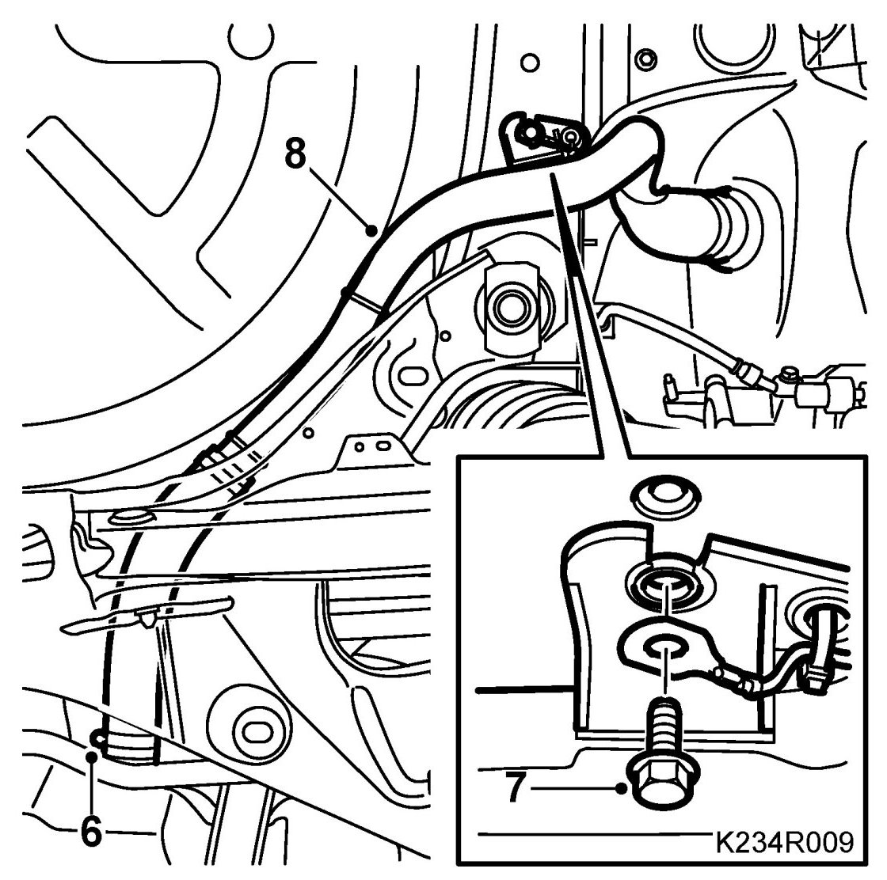
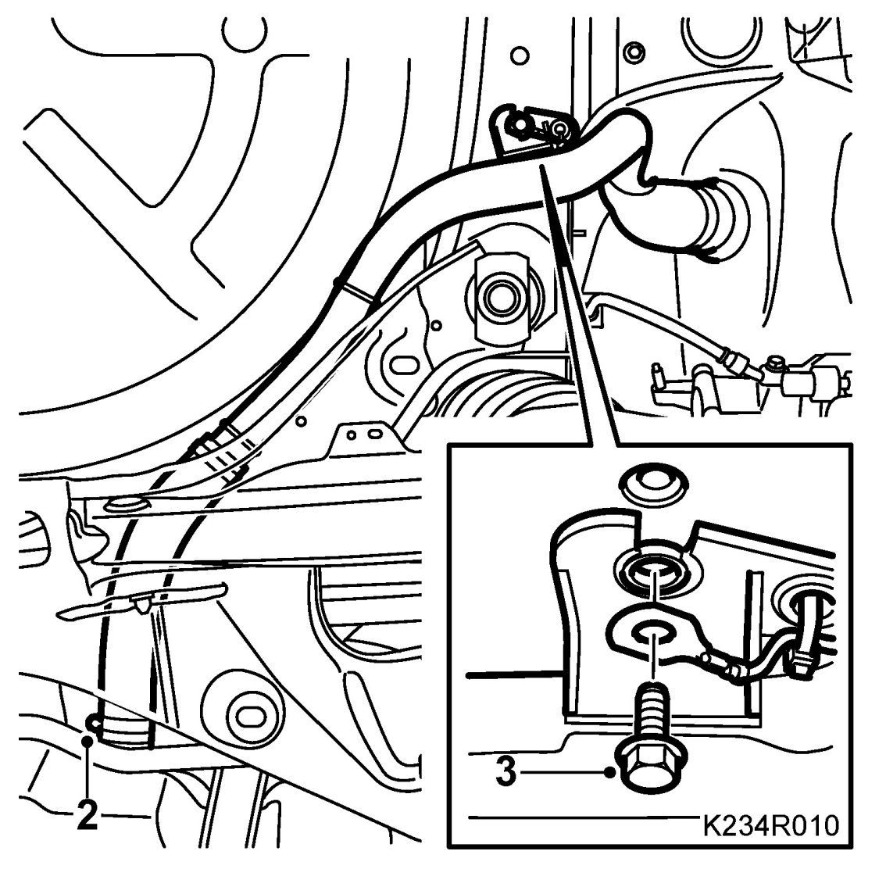

Fuel Filler Pipe
Fuel Filler Pipe
WARNING:
The work involved in removing the fuel pipe requires working with the vehicle's fuel system. The following points should therefore be heeded in conjunction with these measures:
- Have a class BE fire extinguisher on hand. Be aware of the risk of sparks, i.e. in connection with electric circuits, short-circuiting, etc.
- Absolutely No Smoking.
- Ensure good ventilation. If there is approved ventilation for evacuating fuel fumes then this must be used.
- Wear protective gloves. Prolonged exposure of the hands to fuel can cause irritation to the skin.
- Wear protective goggles.
IMPORTANT: Be particularly observant regarding cleanliness when working on the fuel system. Loss of function may occur due to very small particles. Prevent dirt and grime from entering the fuel system by cleaning the connections and plugging pipes and lines during disassembly. Use 82 92 948 Plugs, A/C system assembly. Keep components free from contaminants during storage.
To remove
1. Drain the fuel tank if necessary.
2. Remove the rear wheel.
3. Remove the Wing liner, rear.
4. Remove the fuel filler flap.
5. Raise the car.
6. Undo the filler pipe clamp.

7. Remove the filler pipe screw.
8. Remove the filler pipe. Pull the pipe out of the fuel filler flap port.
To fit
1. Fit a new hose to the filler pipe.
2. Fit the filler pipe. Tighten the clamp's bolt.

3. Fit the filler pipe's and the ground cable's bolt (cars with plastic pipe).
4. Lower the car.
5. Fit the fuel filler flap.
6. Fit the Wing liner, rear
7. Fit the Wheel.